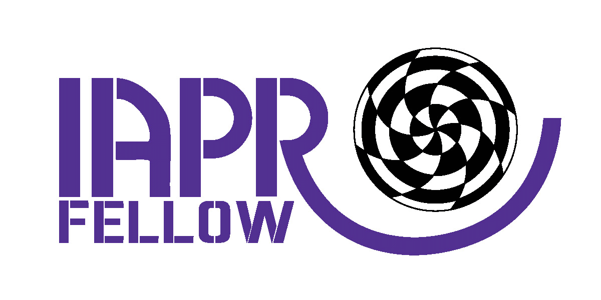

|  |
Notice - I am unable to offer internships to overseas undergrduates, self-funded or otherwise.
Research
- Interests: Computer Vision, Image Processing, Pattern Recognition
- Visual Information Laboratory, Bristol Robotics Laboratory
- Google Scholar
- Research and software
- Sphere Project
- RAs/PhDs: Alessandro Massullo, Victor Ponce Lopez, Faegheh Sardari, Sam Whitehouse, Asma Alzaid, Vahid Soleimani, Farnoosh Heidarvincheh, Zeynel Samak
- Alumni - RAs/PhDs: Sion Hannuna, Massimo Camplani, Lili Tao, Adeline Paiement, John Chiverton,
David Hanwell, Toby Perrett, Hana Alghamdi, Oliver Moolan-Feroze, Chris Beck, Jack Greenhalgh, Alan Broun, Xiaosong Wang, Daniel Blueman, Ronghua Yang, John McGonigle,
Xianghua Xie, Janko Calic, Michael Evans, James Revell, Amir Monadjemi, Sarah Porter,
Alireza Osareh, RK Periasamy, Alison Holmes, Paul Clark - Edited Books:

 Sample chapter: A Galaxy of Texture Features
Sample chapter: A Galaxy of Texture Features
Teaching
- COMS21202: Signals, Pattern, and Symbols (2nd Yr)
- COMS20001: Concurrent Computing (2nd Yr)
Other Activities
- Editor-in-Chief of IET Computer Vision
- Associate Editor of Pattern Recognition
- Associate Editor of Pattern Analysis and Applications, 2005-2019
- Advisory Editor of Scientia Iranica
- Guest Editor:
- Adjunct Professor at the Computer Vision Group, IPM, Iran
- Chairman of the British Machine Vision Association 2005-2008
- Steering Committee member of the Medical Image Understanding and Analysis conference miua.org 2005-2009
- Publicity Officer of the British Machine Vision Association (2000-2005)
- Member of IASTED Technical Committee on Image Processing (2000-2004)
- Chair and Program Committee Activities
- Member of EPSRC College (since 2006), IET, and Senior Member of IEEE.
M.Mirmehdi@cs.bris.ac.uk, 2018
_